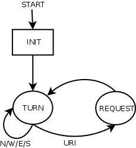

Welcome to the Monkey Music Challenge.
To install the challenge runtime:
gem install monkeymusic
To get started quickly:
monkeymusic demo
To see something on the screen:
monkeymusic -p demo_player
You can probably learn a lot about the game from reading the demo_player.
Also make sure to read the protocol examples at the end of the document.
Your monkey moves around in a flat 2D level. You can think of the level as a matrix, where any square can be occupied by one thing at any given time.
Xl 1 U 2 lX
t ll ll t
###t ########### t###
#t # #T tlTlt T# # t#
## #T#l l#T# ##
#l ######X X###### l#
## # # x # # ##
#T# #t# #t# #T#
#x#l##### # #####l#x#
# # # l # # #
### # # # # # # # ###
#t # # # t#
#l###l#t#t#t#t#l###l#
Every monkey is represented in the level by a numerical id:
\dBesides monkeys, the level can also contain:
spotify:track:......................#UYour monkey has one mission: to find and deliver suitable track recommendations to The User.
To help you figure out what tracks to recommend to your User, you have access to the following of your user’s toplists:
[(track,artist,album,year)][(album,artist,year)][(artist)]You also have a list of what the user does not like:
[(artist)]A monkey can move between squares in the four cardinal directions:
NWESYour monkey can carry a specific amount of tracks at any given time, this
is referred to as the capacity of your monkey.
To stand next to a Track and move towards it is to pick it up, provided that the monkey has remaining capacity.
To stand next to a User and move towards it is to deliver all curretly
carried tracks to the user. Your monkey will then score points according
to how well the tracks fit the user’s music taste.
After delivering tracks, your monkey will once again be at full capacity.
To decide how well a Track fits the music taste of a User, every track is put into one of 5 different score tiers.
2 of these tiers are negative tiers. You don’t want your monkey picking up and delivering tracks from these tiers.
The following criteria decide which tier any given track belongs to:
To recommend a track whose artist is among the user’s Top disliked
artists is simply an epic fail.
When the track is already among the user’s Top tracks, there is not much
point in recommending it, is there?
If the artist of the track is among the user’s Top artists, the track
will be bumped up one tier.
If the album of the track is among the user’s Top albums, the track
will be bumped up one tier.
This is an interesting one. Every user has a Top decade, which is the decade that is most prominent among the user’s Top tracks and Top albums.
If the year of the track belongs to the user’s Top decade, the track
will be bumped up one tier.
Your track will be scored according to it’s tier:
Tier 3 tracks are obviously very valuable, so be on the lookout for these.
Once a Track is picked up, there is no way to get rid of it but to
deliver it to the User, so make sure to stay away from negative tier
tracks.
Every game is broken up into a number of turns. Every turn, your
program will be fed information about the current state of the level, by
reading from stdin. Your program responds by printing one command,
to stdout, telling your Monkey what to do during the current turn.
If there are more that one Monkey in the level, fate will decide which
monkey gets to carry out its command first.
The game consists of two phases.
During the init phase, your program will read information about
the level that will be useful during the entire course of the game.
The information that can be read from stdin during the init phase is:
id of your Monkeywidth of the mapheight of the mapturn limit of the gametoplists of the User.After the init phase, a number of turn phases will follow.
The information that can be read from stdin during the turn phase is:
turn number (1 - turn limit)capacity of your monkey (>= 0)remaining time your program can run before penalty.That’s right, your program will only be allowed to run for a certain
amount of time during the course of the game. When your remaining time
is depleted, your Monkey will fall asleep for 5 turns, after which your
remaining time will be replenished.
Every turn, you can issue one command to your Monkey.
The following commands will result in your Monkey attempting to move in the specified direction. The move will succeed if the adjacent square is empty, or if the move results in the Monkey picking up a Track or deliverings tracks to the User.
NWESInstead of moving, you can every round do a lookup to get metadata on
a Track. You will need the metadata for a track to calculate which
tier it belongs to.
To do a lookup, simply print the uri of the track to stdout.
spotify:track:......................Once every game, you can issue one boost command, and then issue 3 other
commands that will be carried out during that round.

W
The following is printed to stdout:
spotify:track:0S8LgLoseDB6W2HWd1ym6P
Then the following can be read from stdin:
1
spotify:track:0S8LgLoseDB6W2HWd1ym6P,,Condemnation,,Depeche Mode,,Songs Of
Faith And Devotion,,1993
If the lookup failed:
0
Remember to flush the output buffers!
The letter B followed by a comma-separated lists of other commands:
B,W,spotify:track:4CARtDIJS87fOmWb1RxLKK,spotify:track:0S8LgLoseDB6W2HWd1ym6P
Then the monkey will move west and the following can be read from
stdin:
2
spotify:track:0S8LgLoseDB6W2HWd1ym6P,"Condemnation","Depeche Mode","Songs
Of Faith And Devotion",1993
spotify:track:4CARtDIJS87fOmWb1RxLKK,The Fog Rose High,Craft Spells,Idle Labor,2011